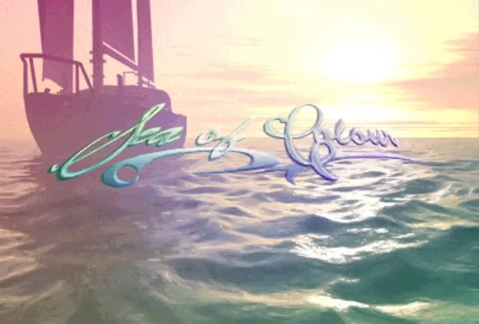
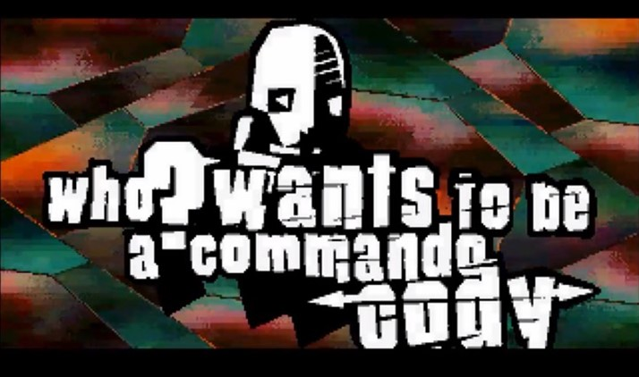
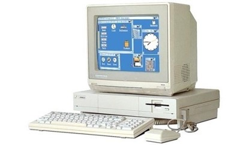
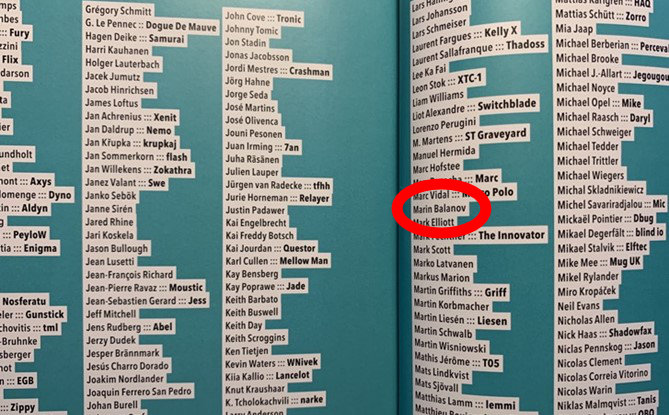

Introduction: Beholding the Digital Ephemeral
For many people, algorithms are complex math that quietly works in the background, powering the technology all around us. But algorithms can be so much more than that.
Artists use algorithms to create media art. One kind of algorithmic art is called computer demos, computer generated real-time video clips that show what kind of graphic and sound effects can really be done by using computer hardware to its full potential. In many cases, demos are inspired by the aesthetics of video games.
This computer art subculture - known as the demoscene[1] - is a place where programs become sensory audio-visual experiences in a display of the artistic, musical, and development skills of their creators. In many cases, demos appropriate the aesthetics of video games.
You don't need to be an expert to appreciate the creativity, the beauty, and the ingenuity behind software-based art - especially when considering the ever-present technical limitations creators must work with.
After all, technology is constantly evolving; a demo created only a decade ago can become obsolete and lost - a victim of its own creative solutions. Demos are often made using the undocumented capabilities and features of old computers by developers seeking to push the machines to their limits and beyond.
Since the early 1980s enthusiasts develop demos on a wide range of computer systems like the Commodore 64, Sinclar ZX Spectrum, the Commodore Amiga, Windows PCs and the Atari ST. Particularly, on classic retro-hardware the demo creators use techniques employed in the development of games, in some cases even pioneering these techniques themselves.
One of the most notable groups of demo creators were The Exceptions. In the late 1980s they were the first to create demos on the Atari ST home computer. They did not accept the limitations of the hardware capabilities of this 16-bit machine and they set out to break them. They wanted to use more colors on the screen than the ST was capable of displaying, they wanted to produce better music than the ST's limited sound chip was capable of producing, they wanted to match the effects seen on more capable and more expensive systems.
From 1987 to 1989, The Exceptions produced half a dozen demos that proved that the Atari ST was far more capable than even the manufacturer had expected. By distributing their demo programs on public domain disks and Bulletin Board Systems (BBS), they reached out to computer users and other enthusiasts to amaze and inspire them. This is how they created the demoscene on the Atari ST.
Topic, Objective and Methodology of This Master Thesis
This master's thesis describes the demo art created by The Exceptions. The demo-group that originated as Crackers, who illegally pirated and distributed games and other software, and moved away from the illegal scene to create demos. The focus of this thesis is to analyze their productions from 1987 to 1989, which were so successful that they inspired other groups internationally to create demos and subsequently form a collective of demo-groups, aptly named The Union.
At the core of this master's thesis lies the question: How did technical limitations and cultural boundaries enable and motivate the process of creating computer demos instead of hampering and limiting it?
The thesis investigates the cultural context that The Exceptions worked in, their motivating factors, and the technical areas they pioneered and how limitations enable and motivate the creation of art. It retraces the steps that led from the first demos, created by The Exceptions out of the technical limitations of the Atari ST. Then, it covers how they broke most of the technical restrictions by teaming up with other demo-makers all over Europe. Thus, they laid some of the groundwork for the networked and connected community that thrives today as the demoscene. The hypothesis that limitations are a motivating factor in art is put to the test by applying it not only to the demo scene, but to a wider variety of individuals in art history.
Finally, the thesis examines the conservation and preservation of media art in the archival context. The different methods to salvage demo files, run demos on original hardware and in emulation are described. In the final appendix, the thesis concludes with a discussion of archives of media art and the technical possibilities in implementing them.
The central part of the thesis, the examination of the demos, uses the methodology of the text analysis. The appendices employ the more practical methodology of the case study of implementing archives using different options and testing their advantages and disadvantages.
Why are computer demos important objects to study in art history? Many so-called "bedroom coders" in the 1980s emerged from the demoscene, i.e. young programmers who started writing software at the start of the home computer revolution from their bedrooms before they had actual office[2]. This led to many individual careers in the areas of software development, but also in other areas of science, technology, engineering and math (STEM).
Music created in the early demoscene became the foundation for an aesthetic called chip music or chip tunes. Musicians choose the style of video game music. This form and practice have long been a vivid area of experimentation in the fringes of new media art, but in the past few years has found its way into the mainstream as a retro-aesthetic e.g. in Hollywood movies such as Scott Pilgrim vs. The World (2010) and Thor: Ragnarok (2017). Furthermore, in the 1990s, many musicians and DJs emerged from the demoscene or were inspired by it[3]. This is particularly true for the vivid techno music scene of mid 1990s Germany but also as recently as Kanye West, who wrote his first music on a "tracker" on the Commodore Amiga.[4]
In essence, computer demos are the definition of new media art on the edge of technology. They expose and break the engineering constraints of emergent media.
The Historic Developments and Achievements in the Years 1987 - 1989
In demo history, the era before the mid-1990s is referred to as "old school" (or "oldskool" as it is also referred to in the demoscene and in the literature[5]). The chosen scope of this thesis falls in the middle of this "old school" time period. Why are these particular years important in the Atari ST demoscene?
The year 1987 saw the release of the first demo for the Atari ST, created by The Exceptions. There had been demos on other systems before, but overall, the demoscene was in its infancy. In this first year, The Exceptions released two more demos and continued their productive streak into 1988. This was the year an editor from the German magazine 68000er ST-Magazin befriended The Exceptions and persuaded them to reveal their coding tricks in a series of articles. Not only did this turn them from an insider group to minor celebrities in the hobbyist computer scene of the Atari ST, but it had two important effects:
- Even though The Exceptions did not use their real names in the articles and only went by their cracker handles, they were now exposed to a much wider audience. This accelerated their separation from the cracker scene, and they turned "legit," solely as creators of demos. This, in turn, advanced their plans to become game developers.[6]
- The exposure of demos as a concept and the demos created by The Exceptions, including all the tricks, processes, and methods they used to program them, had an inspirational effect on other coders and would-be coders. The inner workings and intricacies of a demo were laid bare, and all the audience had to do was to work hard enough to understand and replicate them, then they too could create demos. If the German-speaking demoscene was not already born, then this was its metaphoric birth. Numerous individual demo-makers and demo-groups started creating demos for the Atari ST.[7]
- The Exceptions and the Atari ST demoscene that took its inspiration from them organized the first demo parties for the system with the ST News International Christmas Coding Convention (STNICC) in 1990. There had been many copy parties where cracked games were shared but STNICC was the first party completely devoted to demo-making.[8]
By 1989, The Exceptions started to team up with other demo-groups like DeltaForce and The CareBears (TCB) to form the Union. This year saw the release of the first major megademo for the Atari ST, a form of demo particular to this system; the Union broke most of the ST's technical limits in their Union Demo.
In these three short years, the Atari ST demoscene evolved from the efforts of a tightly knit group to a union of multiple demo-groups, culminating in what can be clearly identified as a pre-web network of demo-makers by 1989—even though they did not know it at the time.
Limitations by Choice
Today, programmers, musicians, and graphic artists in the demoscene deliberately set limits on the size or scope of the little stand-alone demonstration programs they write. Creators of these audio-visual presentations choose to adopt limitations, e.g., limits in the size of the program or the number of lines of code that it can occupy at most, and then they produce the most ingenious, dazzling, and impressive art they can within these restrictions. They do not regard restrictions as a disadvantage but as a challenge to show their complete command of a computer's graphics and sound within strict boundaries.
Nowadays, demo-makers meet at demo parties—large get-togethers of like-minded developers in locations that can host hundreds. At demo-parties, like the annual Revision, Evoke, Nordlicht, and Nova, the organizers set challenges with deliberate limitations[9]. Competing participants need to adhere to these restrictions and produce interesting and innovative graphics, sound, music, and effects within the chosen constraints. A jury of peers then picks the winner, and awards are handed out in different categories. The winners often do not receive valuable prizes; rather, the reward of gaining the admiration of their peers is what drives them. They prove themselves to be smarter, more inventive, and "better" than their competitors. Graphics artists might, for example, be limited in the number of colors they can use in their images or the resolution and size of the whole image or of specific objects, sometimes with only 32 color shades or a canvas smaller than most icons on a modern-day smartphone. Musicians might be limited to a specific number of concurrent music channels, with as few as three electronic instrument voices being a possible restriction. Developers are limited by the memory available to them to be inventive. Typical size constraints are, for instance, a maximum of 4KB of storage (yes, these are kilobytes). At other demo parties and in different categories of a competition, the storage restriction might be a bit more generous at 64KB.
Figure 1: PC Demo Andromeda Software Development (ASD) - For Your Love. 2018. (Source: https://youtu.be/Zrock_tnsSQ)
Try a little experiment for yourself: launch Microsoft Word, open a new document, and save it as it is, devoid of any words. Then, open your file browser, seek out the file you just saved, and look at the document properties to determine the file size. That empty file will already occupy around a dozen kilobytes without any actual content in it! These are the kinds of constraints that demo-makers choose to work within.
The idea that drives these experiments is that adding constraints and limits can boost creativity. Modern computers are very capable in their graphics and sound capabilities but at the same time seemingly limitless, that they require large teams of developers, artists, and even project managers to produce impressive results. The sheer number of possibilities can be staggering, mind-boggling, and, ultimately, paralyzing. By embracing "creativity through limitation," digital artists avoid being overwhelmed with the possibilities. The clearly defined limitations give them laser-sharp focus on delivering something wonderful.

Figure 2: Atari STE Demo Sea of Colour - Dead Hackers Society. 2015. (Source: https://youtu.be/1hvFiv2hpYE)
In their study of demoscene practices, Crafting Code at the Demo-scene, Hansen, Nørgård, and Halskov write:
"The demoscene is a computer subculture whose members produce 'demos', audio-visual presentations that run in real-time on a computer. The main goal of a demo is to show off technical skill as well as audio-visual aesthetical sense. Hence, a 'demo' is short for demonstration, referring to the fact that one demonstrates the achievement of these three aspects. Demos run on different platforms, ranging from both old hardware like the Commodore 64 or the Commodore Amiga to contemporary platforms like the PC or even Arduino."[10]
So far, most of the academic research has focused on the demos created since the turn of the millennium and the large, established demo-parties since then. Yet the origins of the demoscene lie in the early 1980s and therefore before the Internet, before smartphones and a computer on every desk. The demo programs were distributed on Bulletin Board Systems (BBS) or by manually copying them from disk to disk and including them in Public Domain (PD) software collections.
Daniel Botz provided one of the most comprehensive studies of the demoscene from its roots in the 1980s to the early 2000s. Botz describes the demoscene in his doctoral thesis titled Kunst, Code und Machine: Die Ästhetik der Computer-Demoszene as
"The demoscene developed out of the illegal cracker culture, however, it gradually decoupled itself nearly entirely and directed its internal structure completely towards the idea of artistic competition. The contest for the best demo is until today the greatest impulse for productivity and innovation in this non-profit culture."[11]
In Computer Demos - What Makes Them Tick?, Markku Reunanen identifies a key aspect of the demoscene in its competitiveness:
"The demoscene is in a constant state of competition, which is exemplified by numerous practices of the community. To get to the top and acquire fame one needs to impress, win, and be connected."12
Limitations by Necessity
Nowadays, the limitations imposed on demos are by choice and by consensus. This used to be different. In the 1980s, the limitations were a function of the capability of computers of the day. The hardware was limited in memory, storage, and processor speed, as well as in the graphics capabilities, music, and sound effects.
The 8-bit home computers of the 1980s, like the Commodore 64, Sinclair ZX Spectrum, the Atari 8-bit line (XL/XE), the Amstrad CPC, and the Japanese MSX machines, usually had around 48 to 128KB of RAM and their processor speeds ranged from 1MHz to 3.5MHz, depending on the CPU architecture (based on the MOS 6502 or the Zilog Z80). Typical screen resolutions ranged from 160 x 200 pixels to around 320 x 200 pixels.
To put these specifications in perspective: An icon on the home screen of an iPhone has a resolution of 256 x 256 pixels. The graphics on these old machines had odd color restrictions. Most had a total of only 16 colors available, but you could not use them freely. For instance, on the ZX Spectrum, you could only use two colors in an 8 x 8 block of pixels. The Commodore 64 was a bit more flexible, being able to display four colors in 4 x 8-pixel blocks in the low-resolution color graphics mode. While the Commodore 64 had an arcade-quality synthesizer sound chip, the original ZX Spectrum had a mono beeper. Most alarm clocks had better sound than the first models of the ZX Spectrum.
The Amstrad CPC line and the Atari 8-bit XL/XE line were more flexible with their graphics. The Amstrads had low-resolution color graphics with vibrant colors and few restrictions on the use of the colors. Beyond that, they even provided higher resolution graphics with a few colors for word processing and other business applications. In this mode, they provided 80 columns of text out of the box. This was the "holy grail" for business applications in the late 1970s and early 1980s. The 8-bit Atari's had a comparatively large palette of colors, providing a total of 128 colors to choose from, but you could only use around 16 at the same time.

Figure 3: Atari STE Demo STrange roboTS by BLaBla. 2013. (Source: https://youtu.be/fpF_u4mYVAI)
Programmers, graphic artists, and sound artists had to learn to work within these constraints. For the first few years, the commercially available games and applications for these computers were as pedestrian as you might expect. But some developers had greater ambitions. They learned to fully understand the hardware of these comparatively simple machines. They experimented and discovered ways to trick the hardware into exceeding the previous limits. Games and applications started to look, sound, and feel much more advanced than they had any right to be.
The next generation of machines, the 16-bit computers, were released in the mid-1980s, right after the launch of the "almighty" IBM PC compatibles. Starting with the Apple Macintosh and the Sinclair QL, then the Atari 520ST and the Commodore Amiga, these computers had a variation of the Motorola 68000 CPU running at 7-8MHz. The base models came with 128KB of RAM, but most were really only usable if they had 512KB of RAM. Priced at over US-$ 2500, both the Apple Macintosh and the IBM PC were squarely targeted at the high-end market, the other 16-Bit machines were priced and marketed as the next generation of home computers. Like the Macintosh, both the Amiga and the Atari ST (pronounced "Es Tea") came with a mouse. Their operating systems had icons, windows, and menus just like the operating systems we use today. Of course, they were not as refined, but they were much easier to fully grasp with their limited functionalities. The 16-bit computers even started to support expensive peripherals that only a few private individuals could afford but businesses needed, like hard disks and a second monitor.
The Apple Macintosh made great strides in education, graphics, desktop publishing, and some areas of business; there were fewer games than on other systems and little-to-no demos in the first years. The Atari ST and particularly the Commodore Amiga looked and sounded like the video game cabinets in the arcades. They appeared to be ideal for gaming and, by extension, for demos with their lush color graphics and ample memory.

Figure 4: Commodore Amiga 1000 in 1985. (Source: https://www.pcwelt.de/news/Commodore-Amiga-steuert-seit-30-Jahren-Klimaanlage-der-Schule-9708602.html)
Even though this new generation of machines was more advanced, they were still simple enough that diligent and talented developers could learn all aspects of the hardware, all the tricks of the trade to eke out the last bits of performance.
Attaining this level of expertise was not easy, it demanded expertise. Most developers never achieved the mastery necessary to completely exhaust the hardware's potential. Yet, even if they didn't, these machines had ample performance that nonetheless provided great results, at least in most cases.
Standing on the Shoulders of Giants: Prior Academic Research
The demoscene as a field of academic study is relatively young. Yet, a number of definitive works exist already. These writings by academics, such as Doreen Hartmann, Daniel Botz, Lassi Tasajrvi, and Markuu Reunanen, are astoundingly comprehensive and breathtakingly insightful.
Hartmann's doctoral thesis was published in book form as Digital Art Natives. Botz's Kunst, Code und Machine, together with Tasajrvi's Demoscene: The Art of Real-time and Reunanen's licentiate thesis Computer Demos - What Makes Them Tick? are masterful exemplars of academic research cast in eloquent writing. They are one of the reasons why for beginning the journey to write a master's thesis on this topic, albeit in a micro-analytic manner, swapping their breadth for the details of a specific scene for analysis.
There is one aspect that ties the quite different work of Hartmann, Botz, Tasajrvi, and Reunannen together. Out of the necessity to describe and analyze a new area of research, their work is admirably overarching, defining the ground rules for further research and finding and determining the historic principles from the perspective of the latter-day 2000s and the mature demoscene. By then, the demoscene had established its formal structure. Though it is bound to further develop and transform, by the 2000s, the scene had found confidence and pride. Both attributes positively cried out for a canonical history.
The Atari ST demoscene, while immensely productive and inspirational, never produced the vast number of demos as the scene around the Commodore machines, so research in this area has always been limited. Seminal literature on the Atari ST has only recently been released. Marco A. Breddin wrote a trilogy of oral history books that he calls Atari ST and the Creative People. The three books are Breakin' the Borders. A true story of digital liberation and Power Without the Price (in 2017), Beyond the Borders. A fantastic journey to the outer rims of 68000 (2018), and Return of the Borders. In the virtual realm of high-tech pixel worlds (2019).
Breddin does not limit his works to the demoscene; he delivers the exemplary undertaking of describing the Atari ST development, gaming, music, and software scene over a ten-year time period ranging from the early days of the Atari ST through the release of the TT workstation, the expanded Atari STE, the phenomenal Atari Falcon 32-bit computer, and the Atari Jaguar video game system, until the Atari Corporation went out of business in the mid-1990s. The writer of this thesis has supported Marco Breddin's crowd-funding campaigns and is listed as one of the supporters in the third volume (and - of course - misspelling it).

Figure 5: The page of crowd-funding supporters in Marco A. Breddin's Return of the Borders
In the past few years, the study of demos has shifted towards more detail-oriented research. In her article Demo Age: New Views, Digital Humanities researcher Canan Hastik analyzed the type and frequency of effects in demos[13]. She applied methods established by the esteemed media scholar Lev Manovich to analyze digital art by distilling multiple individual frames of a sequence into a single image. Manovich outlined his methodology in How To Follow Global Digital Cultures14. Hastik is currently preparing the publication of her wistfully awaited doctoral thesis, Knowledge Design of Digital Subcultural Heritage. Heuristics from Curating Creativity, Aesthetics and Culture of the Demoscene.
The demoscene is one of many manifestations of hacker culture. In this context, it is tempting to explore seminal works on hackers, for example, the exciting accounts of the ingenious, the illuminating, and the strange, such as Bruce Sterling's hilarious The Hacker Crackdown: Law and Disorder on the Electronic Frontier and Stephen Levy's historic examination Hackers: Heroes of the Computer Revolution. A similar chord is struck in Underground: Tales of Hacking, Madness and Obsession on the Electronic Frontier by Suelette Dreyfus and a pre-Wikileaks Julian Assange, published in multiple editions — the last of which was released in 2011.
We could go back even further to the very origins of computing as we know it with Alan Turing: The Enigma by Andrew Hodges and Douglas Hofstadter, published in 2014. We could explore the dark side of the early days of information processing as described in IBM and the Holocaust: The Strategic Alliance Between Nazi Germany and America's Most Powerful Corporation by Edwin Black, first published in 2001 and rereleased in an expanded edition in 2012. Black recounts the sad and enraging tale of how pre-computing tabulation machines were used by the criminal Nazi regime in World War II Germany to analyze, catalog, and ultimately decimate whole populations on an industrial level. But these historic stories, while engrossing and disturbing, would go far beyond the scope of a master thesis devoted to a specific demoscene.
Demo-makers were part of the open-source movement and culture as it emerged in the early 1990s. The ground-laying works on open and free software by Richard Stallman would apply here and Eric S. Raymond's The Cathedral and the Bazaar. The downright delightful Hackers and Painters by Paul Graham cannot be recommended enough. It discusses not only open source, but also the tension between creativity and coding and how to think like a programmer.
They are digital artists creating algorithmic art using the same tools, the same general-purpose computers used in business, gaming and research. Just like their predecessors in the past, demo-makers today still explore the capabilities of computer hardware to learn how to leverage it to produce art. They are a subculture of new media artists aligned with the description in Digital Art through the Looking Glass by Oliver Grau (et al.):
"With digitisation influencing our everyday lives through telecommunication, social media and mobile applications, digital technologies document, organise and shape contemporary societies. By creating with the same technologies, artists investigate our digitised cultures and circumvent the black-boxing thereof. They investigate and mediate the technological influence on socio-cultural development and transformation. Through transdisciplinary methods at the intersection of art, science and technology, digital art combines artistic creation with innovative research and technological development and thereby bridges art history to digital methods and contemporary socio-cultural phenomena."[15]
Other areas, particularly coding, were, at the time, not regarded as acts of artistic creativity, but the consensus that inventive coding does, in fact, constitute artistic creativity has shifted towards acceptance in the decades since, as argued by Paul Graham in Hackers & Painters: Big Ideas from the Computer Age:
"...at the other extreme you have the hackers, who are trying to write interesting software, and for whom computers are just a medium of expression, as concrete is for architects or paint is for painters."[16]
Standing on the shoulder of these giants, this thesis explores and describes the Atari ST demoscene and focuses on the most important demo-group of the system's early years, the Exceptions. By exploring this narrowly defined scope, this thesis attempts what other works of research only seldomly try, which is to analyze and delve deeply into specific manifestations and works of the early days of a small part of the demoscene, reveal how limitations affect and propel the artists, to come to a larger conclusion of general validity.
Footnotes
[1] There are different spellings for the word
"demoscene" in the literature. Occasionally the word is
hyphenated as "demo-scene". The by far most common spelling is
"demoscene". This will be used in this thesis, even though the
spellchecker of popular word processing software will mark it as
wrong. Please see Reunanen, Markku. WiderScreen. April 15, 2014.
How Those Crackers Became Us Demosceners.
http://widerscreen.fi/numerot/2014-1-2/crackers-became-us-demosceners/
(Retrieved September 30, 2020) and Demoscene - The Art of
Coding. About the Demoscene.
http://demoscene-the-art-of-coding.net/thedemoscene/
(Retrieved on September 29, 2020)
» Back [1]
[2] Wiltshire, Alex (Ed.). 2015.
Britsoft: An Oral History. Read Only Memory.
» Back [2]
[3] Weinstein, Paul. June 2, 2016.
8 Influential Chiptune Artists Who Pioneered the Genre.
Soundfly,
https://flypaper.soundfly.com/discovery/8-influential-chiptune-artists-pioneered-genre/
(Retrieved on August 12, 2020)
» Back [3]
[4] Music trackers are sound and music applications
that allow musicians to address each track individually and play
music modules and sound samples on them. Trackers were
popularized in 16-bit video game and the early demoscene. See
https://www.musictech.net/guides/essential-guide/history-of-trackers/
» Back [4]
[5] Reunanen, Markuu; Silvast, Antti. 2009.
Demoscene Platforms: A Case Study on the Adoption of Home
Computers. University of Art and Design Helsinki.
» Back [5]
[6] "The publisher's revenge" Page 167. Breddin Marco
A. (Foreword by Prof. Dr. Gundolf S. Freyermuth). 2017.
Breakin' the Borders. A true story of digital liberation and
Power Without the Price.
Hannover. MicroZeit Verlag.
» Back [6]
[7] "TEX, The CareBears, ULM and the Lost Boys were
like superstars to us." Page 358. Breddin, Marco A.
Breakin' the Borders.
» Back [7]
[8] "It was the first big Atari ST party." Page 364.
Breakin' the Borders.
» Back [8]
[9] For a full schedule of the current demo parties,
see
https://www.demoparty.net
(Retrieved on April 30, 2020)
» Back [9]
[10] Hansen, Nicolai; Nørgård, Rikke; Halskov, Kim.
2014.
Crafting Code at the Demo-scene. Proceedings of the
Conference on Designing Interactive Systems: Processes,
Practices, Methods, and Techniques.
Aarhus University.
https://dl.acm.org/doi/pdf/10.1145/2598510.2598526
» Back [10]
[11] Daniel Botz. 2011. Kunst, Code und Maschine. Die Ästhetik der Computer-Demoszene. Transcript Verlag, Kultur- und Medientheorie. Bielefeld.
Original Text in German: "Die Demoszene entstand aus der
illegalen Cracker-Kultur, trennte sich aber mit der Zeit fast
völlig von ihr und richtete ihre interne Struktur ganz am
künstlerischen Wettbewerbsgedanken aus. Der Wettstreit um die
beste Demo ist bis heute der stärkste Antrieb für Produktivität
und Innovation innerhalb dieser Non-Profit-Kultur." Page 7.
» Back [11]
[12] Reunanen, Markku. 2010.
Computer Demos - What Makes Them Tick? (Supervisor:
Prof. Tapio Takala). Helsinki. Aalto University, School of
Science and Technology, Faculty of Information and Natural
Sciences, Department of Media Technology. Page 33.
» Back [12]
[13] Hastik, Canan. 2014.
Demo Age: New Views. University of Applied Sciences
Darmstadt. 19 pages.
http://widerscreen.fi/assets/hastik-wider-1-2-2014.pdf
(Retrieved on June 15, 2020)
» Back [13]
[14] Manovich, Lev. 2009.
How To Follow Global Digital Cultures.
http://manovich.net/content/04-projects/062-how-to-follow-global-digital-cultures/59_article_2009.pdf
(Retrieved on June 15, 2020)
» Back [14]
[15] Grau, Oliver; Hoth, Janina; Wandl-Vogt (Eds.).
2019.
Digital Art through the Looking Glass. New strategies for
archiving, collecting and preserving in digital
humanities.
Edition Donau-Universität Krems; ÖAW Austrian Academy of
Sciences.
» Back [15]
[16] Graham, Paul. 2004.
Hackers & Painters: Big Ideas from the Computer Age.
O'Reilly.
» Back [16]